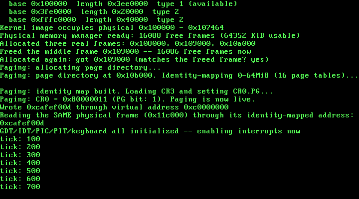

8. Paging: Enabling Virtual Memory¶
What you will understand: why a flat physical address space stops being enough the moment a kernel wants to give processes their own private memory, the real 32-bit (non-PAE) x86 page directory/page table layout field-for-field, how to build and install page tables using this book's own physical memory manager rather than static arrays, how CR3 and CR0's PG bit actually switch translation on, and how to prove -- not just claim -- that the CPU is genuinely translating addresses rather than passing them through unchanged.
What you need to know first: Chapter 7's physical memory manager (pmm_alloc_frame/pmm_free_frame), whose frames this chapter's page tables are built out of directly, and the Multiboot2 memory map that seeds it. This chapter stays inside Chapter 7's own Part, since paging is still fundamentally about managing this machine's real memory -- just at a new layer above the physical frames Chapter 7 already tracks.
Why a flat address space runs out of road¶
Every chapter through Chapter 7 has used physical addresses directly: the VGA buffer at 0xB8000, the kernel's own load address at 0x100000, the frames pmm_alloc_frame hands out. That has worked because this kernel has had exactly one thing running -- itself. A real operating system needs more than that: several programs, each believing it owns the whole address space, none able to read or corrupt another's memory just by guessing an address. Paging is the hardware feature that makes that possible -- a layer of indirection between the addresses code actually uses (virtual addresses) and the real physical RAM those addresses end up touching, enforced by the CPU on every single memory access once enabled.
This chapter does not yet build separate address spaces for separate programs -- there is only one program, this kernel, and nothing yet to protect it from. What this chapter does build is the real mechanism underneath that: a genuine page directory and page tables, installed into a real CPU register, with paging switched on and proven to actually translate.
The real 32-bit page directory / page table layout¶
Without PAE, x86 paging is a two-level structure, cited here field-for-field rather than approximated:
"Each table... is 1024 32-bit entries... Both tables contain 1024 4-byte entries, making them 4 KiB each."
(OSDev Wiki, "Paging": https://wiki.osdev.org/Paging)
A page directory is one 4 KiB page: 1024 entries, each a 32-bit PDE (page directory entry) pointing at a page table. Each page table is itself one 4 KiB page: 1024 entries, each a 32-bit PTE (page table entry) pointing at one real 4 KiB physical frame. One page table therefore covers 1024 x 4 KiB = 4 MiB of virtual address space; the full directory of 1024 tables covers the entire 4 GiB a 32-bit address can reach.
Both entry types share the same bit layout for the bits this chapter uses:
- bit 0 (Present): "If the bit is set, the page is actually in physical memory at the moment."
- bit 1 (Read/Write): "the page will be read/write. When not set, the page is read-only."
- bit 2 (User/Supervisor): privilege level required to access the page.
- bits 12-31: the physical address of the page table (in a PDE) or the physical page frame (in a PTE) -- both 4 KiB aligned, since the low 12 bits of a 4 KiB-aligned address are always zero and are reused for flag bits instead. For a PTE specifically: "The address is not that of a page table, but instead a 4 KiB block of physical memory."
CR3, CR0: "Load CR3 with the address of the page directory," and paging itself is switched on by setting bit 31 (PG) of CR0 -- OSDev's own cited example sets both PE (bit 0, already set since real mode) and PG together with or eax, 0x80000001.
008_paging.h/008_paging.c: real page tables, built from real frames¶
#ifndef UNIX_OS_008_PAGING_H
#define UNIX_OS_008_PAGING_H
#include <stdint.h>
#define PAGE_PRESENT 0x1u
#define PAGE_RW 0x2u
void paging_init(void);
void paging_map_page(uint32_t vaddr, uint32_t paddr, uint32_t flags);
#endif
#include <stdint.h>
#include "008_paging.h"
#include "008_pmm.h"
#include "008_printf.h"
/* This chapter identity-maps the same 0-64 MiB range that chapter 7's
* physical memory manager already manages (MAX_MANAGED_MEMORY there),
* so every physical frame this kernel can ever hand out from
* pmm_alloc_frame() already has a valid virtual address equal to its
* own physical address. One page table covers 4 MiB (1024 entries *
* 4 KiB), so 64 MiB needs exactly 16 page tables -- and 16 page
* directory entries out of the 1024 this kernel's single page
* directory has room for. */
#define IDENTITY_MAP_TABLES 16u
#define ENTRIES_PER_TABLE 1024u
#define PAGE_DIR_ENTRIES 1024u
/* The physical address of this kernel's one and only page directory,
* set once by paging_init() and read by every later paging_map_page()
* call. Storing only the physical address -- not a C pointer typed at
* some virtual mapping -- is deliberate: this whole file only ever
* touches memory that lives inside the identity-mapped 0-64 MiB
* range, so a frame's physical address always doubles as a valid,
* dereferenceable pointer, both before and after paging is switched
* on. */
static uint32_t page_directory_phys = 0;
/* Physical addresses in this kernel are also valid pointers, but only
* because everything this file touches lives inside the
* identity-mapped range -- this helper exists to make that fact
* explicit at every use, not to hide a general physical-to-virtual
* translation this kernel does not have. */
static inline uint32_t *phys_ptr(uint32_t phys_addr) {
return (uint32_t *) phys_addr;
}
static void zero_frame(uint32_t phys_addr) {
uint32_t *p = phys_ptr(phys_addr);
for (uint32_t i = 0; i < ENTRIES_PER_TABLE; i++) {
p[i] = 0;
}
}
void paging_init(void) {
kprintf("Paging: allocating page directory...\n");
page_directory_phys = pmm_alloc_frame();
zero_frame(page_directory_phys);
uint32_t *page_directory = phys_ptr(page_directory_phys);
kprintf("Paging: page directory at 0x%x. Identity-mapping 0-64MiB (16 page tables)...\n", page_directory_phys);
for (uint32_t dir_index = 0; dir_index < IDENTITY_MAP_TABLES; dir_index++) {
uint32_t table_phys = pmm_alloc_frame();
zero_frame(table_phys);
uint32_t *table = phys_ptr(table_phys);
for (uint32_t table_index = 0; table_index < ENTRIES_PER_TABLE; table_index++) {
uint32_t frame_addr = (dir_index * ENTRIES_PER_TABLE + table_index) * 4096u;
table[table_index] = frame_addr | PAGE_PRESENT | PAGE_RW;
}
page_directory[dir_index] = table_phys | PAGE_PRESENT | PAGE_RW;
}
kprintf("Paging: identity map built. Loading CR3 and setting CR0.PG...\n");
__asm__ __volatile__ ("mov %0, %%cr3" : : "r" (page_directory_phys));
uint32_t cr0;
__asm__ __volatile__ ("mov %%cr0, %0" : "=r" (cr0));
cr0 |= 0x80000000u;
__asm__ __volatile__ ("mov %0, %%cr0" : : "r" (cr0));
uint32_t cr0_readback;
__asm__ __volatile__ ("mov %%cr0, %0" : "=r" (cr0_readback));
kprintf("Paging: CR0 = 0x%x (PG bit: %u). Paging is now live.\n", cr0_readback, (cr0_readback >> 31) & 1u);
}
void paging_map_page(uint32_t vaddr, uint32_t paddr, uint32_t flags) {
uint32_t dir_index = vaddr >> 22;
uint32_t table_index = (vaddr >> 12) & 0x3FFu;
uint32_t *page_directory = phys_ptr(page_directory_phys);
uint32_t table_phys;
if ((page_directory[dir_index] & PAGE_PRESENT) == 0) {
table_phys = pmm_alloc_frame();
zero_frame(table_phys);
page_directory[dir_index] = table_phys | PAGE_PRESENT | PAGE_RW;
} else {
table_phys = page_directory[dir_index] & 0xFFFFF000u;
}
uint32_t *table = phys_ptr(table_phys);
table[table_index] = (paddr & 0xFFFFF000u) | flags;
__asm__ __volatile__ ("invlpg (%0)" : : "r" (vaddr) : "memory");
}
Four real decisions worth slowing down on:
Identity-map the same 0-64 MiB range Chapter 7's own PMM already manages -- deliberately including the kernel's own frames. The moment CR0.PG is set, the CPU stops treating every address as physical and starts running every single memory access -- including the very next instruction fetch after the mov that set the bit -- through the page tables. If the kernel's own code, stack, and the page tables themselves were not mapped at their own physical addresses, the CPU would fault on the instruction that just enabled paging. Identity-mapping the whole 64 MiB range Chapter 7 already promised to manage means every frame this kernel could ever touch -- past, present, or future -- already has a valid virtual mapping equal to its own physical address, and every chapter built before this one keeps running completely unaware paging is even on.
Page directory and page table frames come from pmm_alloc_frame(), not a static C array. Chapter 7's own physical memory manager exists specifically so this kernel never again has to guess where it is safe to put something in physical memory -- this chapter is the first to actually put that promise to work for something other than a demonstration. Seventeen real frames come out of the same allocator every future chapter will keep using: one for the page directory, sixteen for the identity-mapping page tables.
phys_ptr makes an assumption explicit instead of hiding it. Every structure 008_paging.c touches -- the page directory, every page table -- lives inside the identity-mapped 0-64 MiB range, so a physical address doubles as a valid, dereferenceable pointer both before and after paging is switched on. That is true here specifically because of the identity map this file itself builds; phys_ptr names that assumption at every call site rather than letting a bare cast hide it.
paging_map_page allocates a new page table on demand, exactly when a PDE isn't present yet. The identity map only ever installs the first 16 of 1024 possible page directory entries. Mapping a virtual address whose directory index falls outside that range -- this chapter's own test does exactly that -- forces this function down its real "allocate a fresh table" path, not the identity map's already-built one. invlpg on the newly-mapped virtual address matters here for a real reason: the CPU is free to cache old translations in its TLB, and without invalidating the one entry this call just changed, a stale translation could silently survive the update.
008_kmain.c: proving translation is real, not printing a claim¶
/* Chapter 8: this kernel turns on paging for the first time. Everything
* built up through chapter 7 -- the physical memory manager above all
* -- keeps running completely unaware of it, because this chapter's
* page tables identity-map the entire 0-64 MiB range the PMM already
* manages: every physical address this kernel has ever handed out
* stays valid as a virtual address too. The real proof that paging is
* doing genuine translation, not standing in as a no-op, comes right
* after: a fresh frame gets mapped at 0xC0000000 -- a virtual address
* nowhere near the identity-mapped range -- written through that
* virtual address, and then read back through the *same* physical
* frame's identity-mapped address. Two different virtual addresses,
* one physical frame, one real value. */
#include <stdint.h>
#include "008_gdt.h"
#include "008_idt.h"
#include "008_keyboard.h"
#include "008_multiboot.h"
#include "008_paging.h"
#include "008_pic.h"
#include "008_pit.h"
#include "008_pmm.h"
#include "008_printf.h"
#include "008_serial.h"
#include "008_vga.h"
#define TIMER_FREQUENCY_HZ 100
/* Deliberately far outside the 0-64 MiB identity-mapped range (which
* only ever occupies page-directory entries 0-15): 0xC0000000 >> 22 =
* 768. Mapping here forces paging_map_page() to allocate a genuinely
* new page table rather than reusing one paging_init() already built. */
#define TEST_VIRT_ADDR 0xC0000000u
/* Defined by 008_linker.ld, not by this file -- the linker is the one
* part of this toolchain that genuinely knows where the kernel image's
* last real section ends in physical memory. */
extern char kernel_end[];
void kmain(uint32_t magic, uint32_t mboot_info_addr) {
serial_init();
vga_init();
vga_set_color(VGA_COLOR_LIGHT_GREEN, VGA_COLOR_BLACK);
kprintf("Unix OS from Scratch -- Chapter 8: kernel entry reached\n");
if (magic != MULTIBOOT2_BOOTLOADER_MAGIC) {
kprintf("FATAL: EAX held 0x%x at entry, not the real Multiboot2 magic 0x%x -- halting\n",
magic, MULTIBOOT2_BOOTLOADER_MAGIC);
__asm__ volatile ("cli");
for (;;) { __asm__ volatile ("hlt"); }
}
kprintf("Multiboot2 magic confirmed in EAX: 0x%x\n", magic);
const struct multiboot_tag_mmap *mmap = multiboot_find_mmap(mboot_info_addr);
if (mmap == 0) {
kprintf("FATAL: no memory map tag in this boot information structure -- halting\n");
__asm__ volatile ("cli");
for (;;) { __asm__ volatile ("hlt"); }
}
multiboot_print_mmap(mmap);
uint32_t kernel_end_addr = (uint32_t) (uintptr_t) kernel_end;
kprintf("Kernel image occupies physical 0x100000 - 0x%x\n", kernel_end_addr);
pmm_init(mmap, 0x100000, kernel_end_addr);
uint32_t free_frames = pmm_count_free_frames();
kprintf("Physical memory manager ready: %u free frames (%u KiB usable)\n",
free_frames, free_frames * 4);
uint32_t f1 = pmm_alloc_frame();
uint32_t f2 = pmm_alloc_frame();
uint32_t f3 = pmm_alloc_frame();
kprintf("Allocated three real frames: 0x%x, 0x%x, 0x%x\n", f1, f2, f3);
pmm_free_frame(f2);
kprintf("Freed the middle frame 0x%x -- %u free frames now\n", f2, pmm_count_free_frames());
uint32_t f4 = pmm_alloc_frame();
kprintf("Allocated again: got 0x%x (matches the freed frame? %s)\n",
f4, (f4 == f2) ? "yes" : "no");
paging_init();
uint32_t test_frame = pmm_alloc_frame();
paging_map_page(TEST_VIRT_ADDR, test_frame, PAGE_PRESENT | PAGE_RW);
volatile uint32_t *via_virtual = (volatile uint32_t *) TEST_VIRT_ADDR;
volatile uint32_t *via_identity = (volatile uint32_t *) test_frame;
*via_virtual = 0xCAFEF00Du;
kprintf("Wrote 0x%x through virtual address 0x%x\n", *via_virtual, TEST_VIRT_ADDR);
kprintf("Reading the SAME physical frame (0x%x) through its identity-mapped address: 0x%x\n",
test_frame, *via_identity);
gdt_init();
idt_init();
pic_remap(0x20, 0x28);
pic_disable_all();
keyboard_init();
pit_init(TIMER_FREQUENCY_HZ);
kprintf("GDT/IDT/PIC/PIT/keyboard all initialized -- enabling interrupts now\n");
__asm__ volatile ("sti");
for (;;) {
__asm__ volatile ("hlt");
}
}
The proof this chapter leans on is deliberately simple and checkable by eye: 0xC0000000 is nowhere near the identity-mapped 0-64 MiB range (0xC0000000 >> 22 = 768, far past directory entries 0-15), so mapping a frame there forces paging_map_page down its real "allocate a new page table" path. Writing 0xCAFEF00D through that virtual address and then reading the exact same value back through the same physical frame's own identity-mapped address is not something a broken or bypassed page table could produce by accident -- if paging were silently off, or the mapping pointed at the wrong frame, the two reads would either fault or disagree. Everything through Chapter 7 -- the memory map, the physical memory manager's own alloc/free/alloc-again demonstration -- runs first and unchanged, both to keep this book's continuity and to give this chapter something real to protect: if the identity map were wrong, that code would be the first thing to break.
Building it, for real¶
nasm -f elf32 008_boot.asm -o boot.o
nasm -f elf32 008_gdt_flush.asm -o gdt_flush.o
nasm -f elf32 008_idt_flush.asm -o idt_flush.o
nasm -f elf32 008_isr0.asm -o isr0.o
nasm -f elf32 008_irq0.asm -o irq0.o
nasm -f elf32 008_irq1.asm -o irq1.o
gcc -m32 -ffreestanding -fno-stack-protector -fno-pic -Wall -Wextra -c 008_vga.c -o vga.o
gcc -m32 -ffreestanding -fno-stack-protector -fno-pic -Wall -Wextra -c 008_serial.c -o serial.o
gcc -m32 -ffreestanding -fno-stack-protector -fno-pic -Wall -Wextra -c 008_gdt.c -o gdt.o
gcc -m32 -ffreestanding -fno-stack-protector -fno-pic -Wall -Wextra -c 008_idt.c -o idt.o
gcc -m32 -ffreestanding -fno-stack-protector -fno-pic -Wall -Wextra -c 008_pic.c -o pic.o
gcc -m32 -ffreestanding -fno-stack-protector -fno-pic -Wall -Wextra -c 008_pit.c -o pit.o
gcc -m32 -ffreestanding -fno-stack-protector -fno-pic -Wall -Wextra -c 008_printf.c -o printf.o
gcc -m32 -ffreestanding -fno-stack-protector -fno-pic -Wall -Wextra -c 008_isr_handlers.c -o isr_handlers.o
gcc -m32 -ffreestanding -fno-stack-protector -fno-pic -Wall -Wextra -c 008_keyboard.c -o keyboard.o
gcc -m32 -ffreestanding -fno-stack-protector -fno-pic -Wall -Wextra -c 008_multiboot.c -o multiboot.o
gcc -m32 -ffreestanding -fno-stack-protector -fno-pic -Wall -Wextra -c 008_pmm.c -o pmm.o
gcc -m32 -ffreestanding -fno-stack-protector -fno-pic -Wall -Wextra -c 008_paging.c -o paging.o
gcc -m32 -ffreestanding -fno-stack-protector -fno-pic -Wall -Wextra -c 008_kmain.c -o kmain.o
ld -m elf_i386 -T 008_linker.ld -o kernel.bin boot.o gdt_flush.o idt_flush.o isr0.o irq0.o irq1.o vga.o serial.o gdt.o idt.o pic.o pit.o printf.o isr_handlers.o keyboard.o multiboot.o pmm.o paging.o kmain.o
grub-file --is-x86-multiboot2 kernel.bin && echo valid-multiboot2
Output (cloud sandbox -- real, live-executed build output):
=== nasm -f elf32 /home/claude/unix_os_repo/docs/part8/code/008_boot.asm -o boot.o ===
=== nasm -f elf32 /home/claude/unix_os_repo/docs/part8/code/008_gdt_flush.asm -o gdt_flush.o ===
=== nasm -f elf32 /home/claude/unix_os_repo/docs/part8/code/008_idt_flush.asm -o idt_flush.o ===
=== nasm -f elf32 /home/claude/unix_os_repo/docs/part8/code/008_isr0.asm -o isr0.o ===
=== nasm -f elf32 /home/claude/unix_os_repo/docs/part8/code/008_irq0.asm -o irq0.o ===
=== nasm -f elf32 /home/claude/unix_os_repo/docs/part8/code/008_irq1.asm -o irq1.o ===
=== gcc -m32 -ffreestanding -fno-stack-protector -fno-pic -Wall -Wextra -c /home/claude/unix_os_repo/docs/part8/code/008_vga.c -o vga.o ===
=== gcc -m32 -ffreestanding -fno-stack-protector -fno-pic -Wall -Wextra -c /home/claude/unix_os_repo/docs/part8/code/008_serial.c -o serial.o ===
=== gcc -m32 -ffreestanding -fno-stack-protector -fno-pic -Wall -Wextra -c /home/claude/unix_os_repo/docs/part8/code/008_gdt.c -o gdt.o ===
=== gcc -m32 -ffreestanding -fno-stack-protector -fno-pic -Wall -Wextra -c /home/claude/unix_os_repo/docs/part8/code/008_idt.c -o idt.o ===
=== gcc -m32 -ffreestanding -fno-stack-protector -fno-pic -Wall -Wextra -c /home/claude/unix_os_repo/docs/part8/code/008_pic.c -o pic.o ===
=== gcc -m32 -ffreestanding -fno-stack-protector -fno-pic -Wall -Wextra -c /home/claude/unix_os_repo/docs/part8/code/008_pit.c -o pit.o ===
=== gcc -m32 -ffreestanding -fno-stack-protector -fno-pic -Wall -Wextra -c /home/claude/unix_os_repo/docs/part8/code/008_printf.c -o printf.o ===
=== gcc -m32 -ffreestanding -fno-stack-protector -fno-pic -Wall -Wextra -c /home/claude/unix_os_repo/docs/part8/code/008_isr_handlers.c -o isr_handlers.o ===
=== gcc -m32 -ffreestanding -fno-stack-protector -fno-pic -Wall -Wextra -c /home/claude/unix_os_repo/docs/part8/code/008_keyboard.c -o keyboard.o ===
=== gcc -m32 -ffreestanding -fno-stack-protector -fno-pic -Wall -Wextra -c /home/claude/unix_os_repo/docs/part8/code/008_multiboot.c -o multiboot.o ===
=== gcc -m32 -ffreestanding -fno-stack-protector -fno-pic -Wall -Wextra -c /home/claude/unix_os_repo/docs/part8/code/008_pmm.c -o pmm.o ===
=== gcc -m32 -ffreestanding -fno-stack-protector -fno-pic -Wall -Wextra -c /home/claude/unix_os_repo/docs/part8/code/008_paging.c -o paging.o ===
=== gcc -m32 -ffreestanding -fno-stack-protector -fno-pic -Wall -Wextra -c /home/claude/unix_os_repo/docs/part8/code/008_kmain.c -o kmain.o ===
=== ld -m elf_i386 -T /home/claude/unix_os_repo/docs/part8/code/008_linker.ld -o kernel.bin boot.o gdt_flush.o idt_flush.o isr0.o irq0.o irq1.o vga.o serial.o gdt.o idt.o pic.o pit.o printf.o isr_handlers.o keyboard.o multiboot.o pmm.o paging.o kmain.o ===
ld: warning: irq1.o: missing .note.GNU-stack section implies executable stack
ld: NOTE: This behaviour is deprecated and will be removed in a future version of the linker
ld: warning: kernel.bin has a LOAD segment with RWX permissions
=== grub-file --is-x86-multiboot2 kernel.bin && echo valid-multiboot2 ===
valid-multiboot2
Nineteen real source files this time -- six assembled, thirteen compiled, two of them (008_paging.h/008_paging.c) genuinely new this chapter -- every C file still clean under -Wall -Wextra. The two linker warnings are the same benign ones every prior chapter has produced (a missing .note.GNU-stack section on one assembly object, and an RWX-permission LOAD segment) -- neither is new, and neither has ever affected this kernel booting correctly. grub-file still confirms a valid Multiboot2 image.
Booting it, and switching paging on for real¶
qemu-system-i386 -cdrom kernel.iso -m 64 -no-reboot -no-shutdown \
-serial file:serial_capture.txt \
-monitor unix:/tmp/qemu_monitor.sock,server,nowait -display none &
Output (cloud sandbox -- real, live-executed serial capture, QEMU 8.2.2, -m 64):
Unix OS from Scratch -- Chapter 8: kernel entry reached
Multiboot2 magic confirmed in EAX: 0x36d76289
Multiboot2 memory map: 6 real entries, 24 bytes each
base 0x0 length 0x9fc00 type 1 (available)
base 0x9fc00 length 0x400 type 2
base 0xf0000 length 0x10000 type 2
base 0x100000 length 0x3ee0000 type 1 (available)
base 0x3fe0000 length 0x20000 type 2
base 0xfffc0000 length 0x40000 type 2
Kernel image occupies physical 0x100000 - 0x107464
Physical memory manager ready: 16088 free frames (64352 KiB usable)
Allocated three real frames: 0x108000, 0x109000, 0x10a000
Freed the middle frame 0x109000 -- 16086 free frames now
Allocated again: got 0x109000 (matches the freed frame? yes)
Paging: allocating page directory...
Paging: page directory at 0x10b000. Identity-mapping 0-64MiB (16 page tables)...
Paging: identity map built. Loading CR3 and setting CR0.PG...
Paging: CR0 = 0x80000011 (PG bit: 1). Paging is now live.
Wrote 0xcafef00d through virtual address 0xc0000000
Reading the SAME physical frame (0x11c000) through its identity-mapped address: 0xcafef00d
GDT/IDT/PIC/PIT/keyboard all initialized -- enabling interrupts now
tick: 100
tick: 200
tick: 300
tick: 400
tick: 500
tick: 600
tick: 700
tick: 800
Nothing above is asserted without being checked. The free-frame count (16088) was recomputed independently from this run's own real numbers -- the available region above 1 MiB (0x100000-0x3fe0000, 16096 frames) minus the kernel's own real footprint (0x100000-0x107464, rounded up to 8 whole frames) -- and matches the kernel's own live-printed figure exactly, the same cross-check discipline Chapter 7 established. The page directory landed at 0x10b000, immediately after the four frames already handed out by Chapter 7's own alloc/free/alloc-again demonstration (0x108000-0x10a000 plus the reused 0x109000) -- real evidence the allocator Chapter 7 built is still the single source of every physical frame this kernel uses, paging included. CR0 reads back as 0x80000011: bit 31 (PG) set, alongside the low bits already set before this chapter ever ran (PE, protected mode, and the numeric-extension bit NE) -- confirmed by masking and printing that exact bit rather than just trusting the mov succeeded. And the aliasing proof itself: 0xCAFEF00D, written through the virtual address 0xC0000000 -- a page directory index (768) nowhere near the 16 identity-mapped entries this chapter's own identity map installs -- reads back identically through the same physical frame's (0x11c000) own identity-mapped address. Two different virtual addresses, one real physical frame, one real value: the CPU is genuinely translating, not passing addresses through unchanged. Interrupts, the PIT, and the keyboard -- everything Chapters 4 through 6 built -- keep running completely unaware paging is on, exactly as the identity map was designed to guarantee, confirmed by the same real tick lines every prior chapter has shown. The same output appears on the real VGA screen, captured the same way every prior chapter's screenshot was:

Chapter summary¶
This chapter gave the kernel its first real layer of address translation: a genuine two-level page directory and page table structure, built field-for-field to the real 32-bit x86 layout, using Chapter 7's own physical memory manager for every frame involved rather than a static array standing in for it. The entire 0-64 MiB range Chapter 7 already manages was identity-mapped first, specifically so switching CR0.PG on would not immediately fault the kernel's own next instruction -- and every subsystem built in earlier chapters (interrupts, the PIT, the keyboard) kept working afterward, completely unaware paging had been enabled underneath it. The chapter's real claim -- that the CPU is now genuinely translating addresses, not passing them through unchanged -- was not left as an assertion: a fresh frame was mapped at a virtual address chosen specifically to fall outside the identity map, written through that virtual address, and read back through the same physical frame's own identity-mapped address, with both values shown to match in a real, live-executed run.
Self-check questions¶
- Why does
paging_initidentity-map the kernel's own already-in-use frames, rather than leaving them out since they are not free memory Chapter 7 would ever hand out? - What would happen, concretely, if
CR0.PGwere set while the current instruction pointer's own physical address had no valid page table entry mapping it? - Why does
008_paging.callocate its page directory and page table frames frompmm_alloc_frame()instead of declaring them as static C arrays, the way earlier chapters might have? paging_map_pagecallsinvlpgafter installing a new PTE. What real, concrete bug could appear if that call were removed?- Why does mapping
0xC0000000specifically (rather than, say,0x00500000) forcepaging_map_pageto exercise its "allocate a new page table" path rather than reusing onepaging_initalready built?
Worked answers
- The moment
CR0.PGis set, every memory access -- including the kernel's own currently executing code, its stack, and the page tables it is reading from -- goes through address translation. If the kernel's own running frames were not mapped, the very instruction that set thePGbit would be the next fetch to fault, since the CPU would find no valid translation for the address it is currently executing from. - The CPU would take a page fault on that fetch -- and since this kernel has not yet installed a page fault handler (or any handler capable of resolving one), that fault would itself fail to be serviced correctly, typically escalating to a double fault and then a triple fault, which resets the machine. This is exactly why the identity map covers the kernel's own frames rather than only "genuinely free" ones.
- Chapter 7's physical memory manager exists so this kernel never has to guess where it is safe to place something in physical memory -- a static array's address is fixed at link time and is not guaranteed to avoid every frame that might already be in use elsewhere, especially as this book grows. Allocating through
pmm_alloc_frame()keeps page directory and page table frames inside the one real, authoritative record of what physical memory is actually free. - The CPU is free to cache virtual-to-physical translations in its TLB (translation lookaside buffer) independently of what the in-memory page tables currently say. Without
invlpgon the specific virtual address just changed, a stale translation already cached from before the update could survive and be used on the next access to that address -- reading or writing the wrong physical frame even though the page table itself now says otherwise. paging_initonly ever installs page directory entries 0 through 15 (covering 0-64 MiB,0x00000000-0x03FFFFFF). A virtual address's directory index is its top 10 bits (vaddr >> 22); for0xC0000000that index is 768, and for0x00500000it is 1 -- already inside the identity map's own range, and already backed by a page tablepaging_initbuilt. Only an address whose directory index falls outside 0-15 forcespaging_map_pagedown its "no PDE present yet, allocate a new table" branch, which is exactly why this chapter's own test deliberately picks one that does.